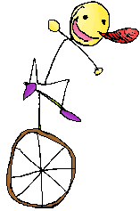
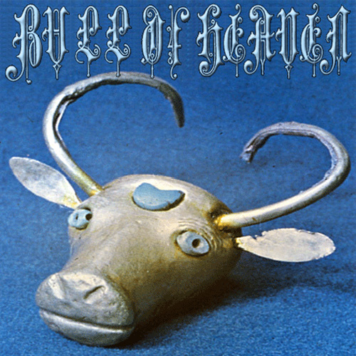

Interview with Juraj 'Speedos' Kusenda
from http://www.landsofgames.com30.08.2017  Hey Speedos, how are you today? Are you ready for this?
im good, hell yea!!!! Alright, question number 1. What inspired you to make games? this might take a bit lol No problem I'll get food while u type woah now youre makin me think lol ive been interested in makin stuff since i was a kid, since i was born in Slovakia, the way i was introduced to games was very different from the way most people were. I mainly grew up playing adventure games and weird freeware/flash stuff, anything really- however the stuff i was the most attracted to were games that were not necessarily perfectly made but had heart. i got a lot of ideas from those things and it made me love to create. later on after creating some stuff, i got more into the internets and found out that, to my shock, games that most ppl played in their childhood are radically different from mine. so i try to be creative and use the influence i have from my favorite games and ofc i keep it real!!! 2. What's the first game you ever played? first game i ever played was either Solitaire or Prehistoric on my mom's pc (which were the only two games on it), i had a blast with both either way! 3. What will be in the future with your creations? Will you make more games? do you think more people will know about you? anything can happen. ive already went through a couple "phases" in my creations (i had 2 completely different websites before the one i have now) but ill always make stuff that i like to make. dont really care how many people play my games, but if they do so, i hope they enjoy! 4. What did you eat recently? just had some mad good kfc(TM), hope to get my endorsement paycheck soon 5. What do you think about the rising amount of innapropriate speedos pictures?  "Spreados" and, based on goatse picture good answer, and it's a good entrance for our next question 6. Are you sponsored by the goverment? no, im the one pullin all the strings behind the scenes (dont tell trump he dont know yet) 7. What do you like to listen to? music!!!!!! but for real, mostly stuff that is really different and interesting from what you can usually hear. stuff like: Passenger of Shit, Nero's Day at Disneyland, Kubus, Burzum, weird game soundtracks etc. My favorite of them all.... ...is definitely Bull of Heaven, they are just my cup of acid and i listen to them almost religiously.  Bull of heaven does snot count? ya snot, ew 9. Would you rather be the secret world governor or the guy behind KFC? governor but id definitely dig free chicken 10. What is your favorite cereal? cereal is a brainwash tool that i implemented secretly using the goverment you FOOL goddamn i like cereal good questions i gotta say lol 11. Your catchphrase? Or just a cool phrase you like simsala bimmmmm 12. It's time to end the interview. What would you like to tell to the young game creators, and to the old? What will be your final words? Be cool and make good shit and dont let it get in yo head folks!
Thank you speedos!
|